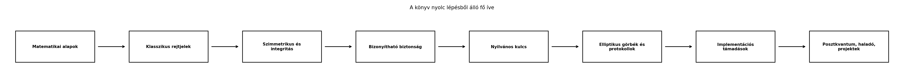
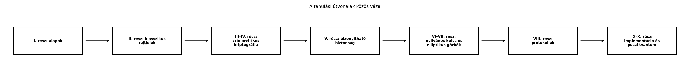

Amikor a böngésződben megnyitod a bank webhelyét, néhány tizedmásodperc alatt olyan rejtjelezett csatorna jön létre, amelyben két idegen gép közös titokban állapodik meg úgy, hogy a köztük lévő hálózat minden bájtját lehallgathatja egy támadó. Hogyan tud két idegen titkosan beszélni egy olyan hálózaton, amelyet bárki lehallgathat? Honnan tudja a böngésző, hogy valóban a bankkal, és nem egy közbeékelődő hamis szerverrel beszél? Miért nem elég a titkosítás, ha közben valaki megváltoztathatja az üzenetet? Hogyan tárol egy webhely jelszavakat úgy, hogy egy adatbázis-szivárgás ne fedje fel őket? Mi történik akkor, ha kvantumszámítógépek képesek lesznek megoldani a ma használt matematikai problémákat?
Ez az öt kérdés a modern kriptográfia lényegét jelöli ki. A könyv ezekre építi fel a tárgyat, nem receptgyűjteményként, hanem egymásra épülő fogalmi láncként: a matematikai alapoktól a klasszikus rejtjeleken és a szimmetrikus titkosításon át a nyilvános kulcsú rendszerekig, a valós protokollokig és a posztkvantum-kriptográfiáig. A cél nem az, hogy egy adott könyvtár hívását megtanuld, hanem hogy megértsd: miért biztonságos egy konstrukció, milyen feltevéseken nyugszik, és hogyan törik el, ha rosszul használják.
A könyv tizenegy része logikai láncot alkot. Az alábbi ábra nyolc lépésbe sűríti ezt az ívet, mert a tanulás szempontjából több részt érdemes együtt látni.

A nyolc lépés a következőket takarja. Az I. rész felépíti a számelméletet, az algebrát, a valószínűséget és a bonyolultságelméletet, valamint a Python-eszközöket. A II. rész a klasszikus rejtjeleken és Shannon elméletén keresztül mutatja meg, miért bukik el az intuitív titkosítás, és mit jelent a tökéletes titkosság. A III. és IV. rész a szimmetrikus kriptográfiát, a hash-függvényeket, a hitelesítést és a kulcsszármaztatást tárgyalja. Az V. rész bevezeti a bizonyítható biztonság nyelvét. A VI. és VII. rész a nyilvános kulcsú kriptográfiát és az elliptikus görbéket, a VIII. rész a valós protokollokat, a IX. rész az implementációs támadásokat, a X. rész a posztkvantum- és haladó kriptográfiát, a XI. rész pedig záróprojektekkel és vizsgafeladatokkal foglalja össze a tanultakat.
Minden kriptográfiai konstrukció tárgyalásakor ugyanazt az elemzési keretet használjuk. Ezt először pontosan rögzítjük, mert a könyv minden későbbi alfejezete erre épít.
Definíció (a kriptográfiai konstrukció elemzésének négy kérdése). Minden kriptográfiai séma, protokoll vagy primitív tárgyalásakor a következő négy kérdést tesszük fel:
A négy kérdés sorrendje nem véletlen. Először a támadómodellt kell rögzíteni, mert enélkül a „biztonságos” szónak nincs értelme. Utána a működést, majd a biztonsági érvet, végül a hibalehetőségeket. A könyvben minden konstrukciónál ezt a sorrendet követjük.
A könyv középiskolai algebrát, függvényfogalmat, logaritmust és binomiális együtthatót feltételez. Emellett feltételezi, hogy Pythonban tudsz rövid függvényeket, ciklusokat, listákat írni, és hogy a bájtokat és egész számokat oda-vissza tudod alakítani. A bináris és hexadecimális számábrázolást, valamint a XOR műveletet a könyv felfrissíti, így ha ezek kissé megkoptak, nem jelent akadályt.
Amit nem feltételezünk: számelméletet, absztrakt algebrát, valószínűségszámítást és bonyolultságelméletet. Ezeket a könyv I. része fokozatosan felépíti. Éppen ezért az I. rész nem „matematikai kitérő”, hanem a későbbi fejezetek alapja: az euklideszi algoritmus, a moduláris inverz, az Euler–Fermat-tétel, a véges testek és a születésnapi paradoxon mind konkrét kriptográfiai konstrukciókban tér vissza.
A könnyebb önálló tanulás érdekében minden alfejezet ugyanazt a szerkezetet követi:
A kiemelések jelentése is állandó. A Definíció új fogalmat rögzít; a Tétel, Lemma, Állítás és Következmény bizonyított vagy levezetett matematikai eredményt ad, a bizonyítás végét ∎ jelzi. A Megjegyzés fontos kiegészítést, a Példa konkrét esetet, az Ellenpélda rossz konstrukciót mutat. A Támadás kidolgozott támadást ír le egy játékimplementáció vagy hibás konstrukció ellen, kizárólag oktatási céllal. Az Alkalmazás valós felhasználást, a Figyelem gyakori hibát vagy félreértést, az Algoritmus számozott lépésekből álló eljárást jelöl.
A könyv egyik legfontosabb szervezőelve a továbbvitt eredmények rögzítése. Sok matematikai tétel vagy konstrukció később egy másik alfejezetben válik igazán fontossá. Például a kiterjesztett euklideszi algoritmus a moduláris inverz kiszámításában, a moduláris inverz az RSA kulcsgenerálásában, a születésnapi paradoxon a hash-függvények ütközési korlátjában tér vissza. Hogy ezek a láncszemek ne vesszenek el, minden alfejezetben kiemelt Továbbvitt eredmény bekezdés mondja meg, hol használjuk majd az adott eredményt, és a fejezet végi összefoglaló pontosan, feltételekkel együtt megismétli.
Ehhez kapcsolódik a kriptográfiai jegyzetfüzet vezetése. Ez nem a könyv kivonata, hanem a te személyes, folyamatosan bővülő térképed. Minden bejegyzéshez érdemes feljegyezned:
Ezt a jegyzetfüzetet a záró fejezetben, az A kriptográfia fogalmi térképe és döntési fája alfejezetben fogalmi térképpé alakítjuk. Ha mostantól ezt a szokást követed, a vizsgára és a gyakorlati munkára is használható belső referencia alakul ki.
A könyv végén, a Képlet- és jelölésgyűjtemény függelék „Jelölések” pontjában gyűjtöttük össze azokat a matematikai és kriptográfiai jelöléseket, amelyeket minden alfejezetben azonosan használunk. A függelékek: Fogalomtár (magyar–angol), Képlet- és jelölésgyűjtemény, Kompetenciatérkép és tanulási útvonal, Bibliográfia és forráskulcsok. Ilyen például , az egyenletes véletlen választás jelölése, a biztonsági paraméter vagy , a támadó és előnye . Amikor egy alfejezet egy ettől eltérő jelölést vezet be, azt az adott helyen külön kimondja. Ha egy jelölést elfelejtesz, lapozz a függelékhez; ne próbáld a fejezetenként ingadozó jelöléseket kitalálni, mert a kriptográfiában a pontos jelölés a támadómodell és a biztonsági érv része.
A könyv egészén végigvonul egy konkrét, mindennapi példa: amikor a böngésződ HTTPS-kapcsolatot létesít egy bankkal. Ennek lépései szépen kijelölik a könyv útját:
Amikor egy későbbi alfejezetben találkozol egy primitívvel, kérdezd meg: hol van ez a lépés a HTTPS-kapcsolatban? Ha nem tudod elhelyezni, érdemes visszalapoznod.
cryptography csomag magas szintű API-ját használd, ahogy a
Python-labor: hashlib, secrets és a
cryptography csomag alfejezetben látni fogod.1. feladat (A). Fogalmazd meg a négy elemzési
kérdést egy általad választott kriptográfiai eszközre, például a
jelszótárolásra.
2. feladat (A). Az alábbi kiemelések közül melyik jelöl
definíciót, támadást, algoritmust és figyelmeztetést:
Definíció, Támadás,
Algoritmus, Figyelem? Írd le mindegyik
rövid jelentését.
3. feladat (B). Tervezz olvasási útvonalat egy
mobilalkalmazás-fejlesztőnek, aki a Signal-protokollt szeretné érteni.
Mely részeket és milyen sorrendben olvasná?
4. feladat (B). Egy tanuló az RSA-fejezetet az elejétől
a végéig olvassa, de kihagyja a bizonyítható biztonságról szóló V.
részt. Nevezz meg legalább két fogalmi hiányosságot, amivel emiatt
találkozni fog.
5. feladat (C). Magyarázd el, miért nem elég egy
konstrukcióról azt állítani, hogy „nincs ismert támadás”. Mi a szerepe a
bizonyításnak, a redukciónak és a feltevések kimondásának?
6. feladat (D). Készítsd el a saját kriptográfiai
jegyzetfüzeted egy bejegyzésének sablonját. Milyen mezőket fog
tartalmazni? Mutasd be egy későbbi fejezetből választott fogalommal,
például a moduláris inverz vagy a születésnapi paradoxon példáján.
1. feladat megoldása. Jelszótárolásnál: (1) a támadó egy kiszivárgott jelszó-adatbázist ismer, és ki akarja nyerni a jelszavakat; (2) a szerver jelszó-hasht, sót és költségparamétert tárol; (3) a biztonság azon múlik, hogy a hash egyirányú és lassú, a só egyedivé teszi a támadást; (4) elromlik, ha só nélkül, gyors hash-sel vagy túl alacsony iterációszámmal tároljuk a jelszavakat.
2. feladat megoldása. Definíció új fogalmat rögzít; Támadás oktatási célú támadást mutat be; Algoritmus számozott lépésekből álló eljárás; Figyelem gyakori hibára vagy félreértésre hívja fel a figyelmet.
3. feladat megoldása. A fejlesztő először az I. részből a moduláris aritmetikát és a Diffie–Hellmanhoz szükséges csoportfogalmat tanulja, majd a III–IV. részből a blokkrejtjelek üzemmódjait, a hash-függvényeket, a MAC-et, a hitelesített titkosítást (AEAD) és a kulcsszármaztatást (HKDF), mert a double ratchet KDF-láncai és üzenetkulcsai ezekre épülnek; ezután a VI. részből a Diffie–Hellmant, a VII. részből az X25519-et és Ed25519-et, a VIII. részből a Signal-protokoll X3DH és double ratchet leírását, végül a IX. részből az implementációs buktatókat. A TLS és a biztonságos csatornák fejezete is segít a protokollszemlélet kialakításában.
4. feladat megoldása. Legalább két hiányosság: (1) nem érti az IND-CPA és IND-CCA biztonsági játékokat, ezért nem tudja megítélni, miért nem elég a textbook RSA; (2) nem érti a redukciós érvelést, ezért az RSA-OAEP bizonyítását és a véletlen orákulum modell szerepét sem tudja követni. Emellett a malleabilitás fogalma is hiányzik.
5. feladat megoldása. A „nincs ismert támadás” heurisztikus állítás, amely az idő múlásával változhat. A bizonyítás vagy redukció azt mutatja meg, hogy ha a konstrukciót feltörik, akkor egy nehéznek vélt matematikai probléma is megoldható. Ehhez pontosan ki kell mondani a feltevéseket, mert a bizonyítás csak annyira erős, amennyire a feltevés helyes. A biztonsági érv így átláthatóvá, ellenőrizhetővé és összehasonlíthatóvá válik.
6. feladat megoldása. Például: Tétel/konstrukció: moduláris inverz; Pontos állítás: akkor és csak akkor invertálható, ha , és az inverz kiterjesztett euklideszi algoritmussal számítható; Feltételek: ; Kis példa: , mert ; Továbbvitt eredmény: RSA kulcsgenerálás; Hiba: ha a modulushoz nem relatív prím, nincs inverz; Saját megjegyzés: az inverz nem osztás, hanem kongruenciamegoldás.
A könyv a kriptográfiát az öt vezérkérdés köré szervezi: hogyan beszél titkosan két idegen, honnan tudjuk, kivel beszélünk, miért nem elég titkosítani, hogyan tárolunk jelszavakat, és mi lesz a kvantumszámítógépek után. A tizenegy rész a matematikai alapoktól a klasszikus rejtjeleken, a szimmetrikus és nyilvános kulcsú kriptográfián, a protokollokon és az implementációs támadásokon át a posztkvantum- és haladó témákig vezet. Minden konstrukciónál négy kérdést teszünk fel: mi a cél és a támadómodell, hogyan működik, miért biztonságos, és hogyan törik el. Az alfejezetek állandó szerkezete motivációt, példákat, bizonyítást, valós alkalmazást, tipikus hibákat, önellenőrzést és feladatokat tartalmaz. Továbbvitt eredmény. Az itt rögzített négy elemzési kérdés, az alfejezetek állandó szerkezete, a jelölési konvenciók használata és a kriptográfiai jegyzetfüzet vezetésének elve minden későbbi alfejezet keretét adja; a jegyzetfüzet a(z) A kriptográfia fogalmi térképe és döntési fája alfejezetben válik záró fogalmi térképpé.
Ebben az alfejezetben nem támaszkodom konkrét, ellenőrzött
forrásoldalra. A fejezet elején megadott kiindulópontok – a
cryptography csomag dokumentációja, a Python
secrets modul leírása és a cryptobook.us – tájékozódási
alapok; a pontos API-leírások és szabványhivatkozások ellenőrzése a
későbbi, érintett alfejezetekben történik. A könyvben használt
szabványszámok, paraméterajánlások és incidensadatok minden esetben
ellenőrzést igényelnek, ezért azoknál az alfejezeteknél külön
jelzem.
A kriptográfia tanulása akkor lesz hatékony, ha nem egyszerűen „az elejétől a végéig” akarunk haladni, hanem a saját célunkhoz igazítjuk az olvasás mélységét és a feladatok szintjét. Ez a könyv a könyv használata: cél, felépítés, olvasási mód alfejezettől Továbblépés: kutatás, gyakorlat és pályák a kriptográfiában alfejezetig terjedő, 160 alfejezetet tartalmazó tananyag: a középiskolás algebraismétléstől a posztkvantum-kulcscseréig és a zk-SNARK-okig vezet. Aki fejlesztőként gyorsan szeretne biztonságos kódot írni, más útvonalat érdemes választania, mint aki kutatóként a bizonyítások teljes láncát akarja végigjárni. Ebben az alfejezetben definiáljuk a tanulási útvonal fogalmát, adunk egy 12 kérdéses belépő tesztet, heti ütemezést, mérföldköveket és a továbblépés szabályát.
Az alábbi diagram a négy tanulási útvonal közös vázát mutatja. Az útvonalak ugyanezt a főláncot járják be, de a bizonyítások mélysége, a feladatszintek és a Python-példák aránya eltérő.

A hét állomás minden útvonalon megjelenik, de például a fejlesztői úton a V. rész bizonyításai rövidebb vázlatok, a biztonsági szakember úton pedig a IX. rész támadásai kapnak kiemelt szerepet.
Definíció (tanulási útvonal). Tanulási útvonalnak nevezzük a könyv alfejezeteinek olyan rendezett részhalmazát, amelyhez hozzárendeljük:
Definíció (továbblépési szabály). Egy alfejezet akkor tekinthető feldolgozottnak, ha
A feladatszintek a következők: A – definíció és kis paraméteres számolás; B – több lépéses számolás, protokollelemzés vagy kódértelmezés; C – elméleti bizonyítás, redukció vagy biztonsági érvelés; D – alkalmazási vagy „törd fel a játékimplementációt” feladat.
A belépő teszt diagnózis, nem vizsga. Az a célja, hogy kiderüljön, melyik alapozó részt érdemes lassabban, illetve gyorsabban feldolgozni. A kérdések a könyv előismeret-szintjét ellenőrzik: hatványozás, maradékos osztás, logaritmus, binomiális együttható, bináris/hexadecimális számábrázolás, XOR és egyszerű Python.
0x2a
decimálisan?0x2b7e1516 érték? Mi az
első bájt decimális értéke big-endian értelmezésben?0x3C XOR 0x0F értékét hexadecimálisan.n = 0x1F
print(n)
print(bin(n))
print(n.to_bytes(1, 'big'))Megoldókulcs.
0xD; 0x2a
.0x2b7e1516 négy bájt; big-endian sorrendben az első
bájt 0x2b, azaz 43 decimálisan.0x3C XOR 0x0F = 0x33, mert
.31
0b11111
b'\x1f'A teszt értelmezése: ha az 1–4. kérdések valamelyike hibás, az Oszthatóság, maradékos osztás és az euklideszi algoritmus alfejezetet lassabban, minden részeredményt levezetve dolgozd fel. Ha az 5–8. kérdésekben hibázol, a Bonyolultságelmélet és egyirányú függvények és a Diszkrét valószínűség és a születésnapi paradoxon alfejezetekre szánj több időt. Ha a 9–12. kérdések valamelyike hiányos, a Python-labor: hashlib, secrets és a cryptography csomag és a kettes számrendszer felfrissítése után kezdj.
Minden alfejezet sorrendben, a bizonyítások teljes terjedelemben, az A és B feladatok mindegyike, a C és D feladatokból fejezetenként legalább egy. Ez az egyetemi kurzussal egyenértékű, heti 4–5 alfejezet mellett 32–40 hetes út. Akkor válaszd, ha hosszabb távon is kriptográfiával akarsz foglalkozni, és nem tudod előre, melyik részterületre lesz szükséged.
A bizonyítások nagy részét vázlatként, a biztonsági érvelést viszont
pontosan olvasod. A Python-illusztrációk és a cryptography
könyvtár használata elsődlegesek. Az A és B feladatokból sokat
megoldasz, a C jelű elméleti bizonyításokból csak válogatsz. Ez az út
nagyjából 24–30 hét alatt bejárható, ha a számelméleti részeken
gyorsabban haladsz. Jó választás backend-, mobil- vagy
alkalmazásfejlesztőknek.
Minden tételt teljes bizonyítással, a redukciók előnyveszteségével együtt dolgozol fel. A C szintű feladatok itt nem opcionálisak, hanem az útvonal fő feladatai. A Python-példák kiegészítők, de a kis csoportokkal való kísérletezés hasznos. Ez a leglassabb, jellemzően 40 hétnél is hosszabb út; akkor ajánlott, ha a későbbiekben kriptográfiai kutatást, protokolltervezést vagy posztkvantum-matematikát tanulnál.
A hangsúly a protokollokon, a PKI-n, a TLS 1.3-on, a Signal-protokollon, a WireGuardon, az oldalcsatornákon és az implementációs hibákon van. A matematikai bizonyításokból a támadások megértéséhez szükséges vázlat elegendő, de a támadási lépéseket és a védekezést teljes mélységben kell ismerned. A D jelű feladatok itt kiemelten fontosak. Ez az út biztonsági mérnököknek, auditálóknak, penetration testereknek szól.
A heti 4–5 alfejezetes tempó a teljes anyagot 32–40 hét alatt teszi bejárhatóvá; a táblázat hetei a lassabb, heti kb. 4 alfejezetes tempót követik (összesen kb. 39 hét). A táblázat a hét fő mérföldkövet mutatja; a hetek hozzávetőlegesek, és a választott útvonaltól függően eltolódhatnak.
| Mérföldkő | Rész | Tartalom | Jellemző hét |
|---|---|---|---|
| M1 | I. | Moduláris aritmetika, Euler–Fermat, csoportok, véges testek, valószínűség, véletlen | 1–5. |
| M2 | II. | Klasszikus rejtjelek, kriptanalízis, Shannon, tökéletes titkosság | 6–7. |
| M3 | III–IV. | AES, üzemmódok, hash, MAC, hitelesített titkosítás, kulcsszármaztatás | 8–15. |
| M4 | V. | Játékalapú definíciók, IND-CPA, IND-CCA, PRF/PRP, redukciók | 16–17. |
| M5 | VI–VII. | Diffie–Hellman, RSA, diszkrét logaritmus, digitális aláírások, elliptikus görbék | 18–25. |
| M6 | VIII–IX. | PKI, TLS 1.3, SSH, Signal, WireGuard, oldalcsatornák, API-misuse | 26–31. |
| M7 | X–XI. | Posztkvantum-kriptográfia, titokmegosztás, zero-knowledge, záróprojektek | 32–39. |
A mérföldkövek nem csupán időpontok, hanem készültségi állapotok. Az M4 például azt jelenti, hogy el tudod olvasni egy konstrukció biztonsági játékát, és megérted, miért jelent előnyt a támadónak az IND-CPA-kísérletben. Az M5 birtokában látod, miért nem elég a textbook RSA, és miért lett szabvány az OAEP vagy a PSS. Az M7 után a két vizsgafeladatsor teljes hosszában megoldható.
Továbbvitt eredmény. Az itt definiált útvonalak, a heti ütemezés és a mérföldkövek adják a keretet a(z) A kriptográfia fogalmi térképe és döntési fája alfejezetben szereplő áttekintéshez; az első vizsgafeladatsort a(z) Vegyes vizsgafeladatsor I.: matematika, klasszikus és szimmetrikus kriptográfia, a másodikat a(z) Vegyes vizsgafeladatsor II.: nyilvános kulcs, protokollok, implementáció és posztkvantum alfejezetben az M5, illetve az M7 mérföldkő után érdemes megoldani.
Egy Python backend fejlesztő jellemzően a fejlesztői gyakorlati útvonalat választja. Három hónap alatt eljuthat az AES-GCM, a HKDF, a jelszótárolás és az X.509-tanúsítványellenőrzés biztonságos használatáig, miközben a bizonyításokból annyit vesz át, amennyi a leggyakoribb hibák elkerüléséhez kell. Egy biztonsági elemző viszont a Tanúsítványok és az X.509–Könyvtárválasztás, auditálás, tesztvektorok és fuzzing szakaszokat akár előre is veheti, mert ott a TLS-kézfogás, a tanúsítványlánc-hibák, a cache-időzítés és a nonce-újrahasználat gyakorlati oldala áll a középpontban.
0x3C XOR 0x0F hexadecimálisan?1. feladat (A). Sorold fel a négy tanulási útvonalat, és mindegyikhez írj egy-egy mondatot arról, kinek ajánlott.
2. feladat (A). A belépő teszt melyik két kérdését érdemes újra megoldani, ha a moduláris aritmetikában bizonytalan vagy?
3. feladat (B). Készíts négyhetes tervet a fejlesztői gyakorlati úton heti 5 alfejezettel. A könyv tartalmából (vagy a Kompetenciatérkép és tanulási útvonal függelékből) válassz 20 alfejezetet, hetekre bontva, és indokold röviden a választást.
4. feladat (B). A mérföldkő-táblázat heteinek ellenőrzésére számold ki: az I. rész 24 alfejezete heti 5 alfejezettel hány hetet vesz igénybe, a III. rész 16 alfejezete pedig heti 4 alfejezettel hány hetet?
5. feladat (C). Indokold meg, miért értelmes a továbblépési szabályban a 80%-os küszöb, és miért nem elég az 50%? Miért nem lenne értelmes ebben a kontextusban az „elhanyagolható” szó kriptográfiai jelentése?
6. feladat (D). Tervezd meg saját biztonsági szakember útvonaladat a Tanúsítványok és az X.509–Könyvtárválasztás, auditálás, tesztvektorok és fuzzing szakaszokból. Tegyél hangsúlyt a TLS-kézfogásra, a PKI-hibákra, az oldalcsatornákra és az API-misuse-ra. Jelöld meg, hogy mely matematikai bizonyításokat dolgozod fel vázlatosan, és indokold a döntést.
0x33.A tanulási útvonalak a könyv 160 alfejezetét a tanuló céljához igazítják. A belépő teszt 12 kérdése diagnosztikusan jelzi, melyik alapozó részt kell lassabban feldolgozni: hatványozás, maradékos osztás, logaritmus, binomiális együttható, bináris/hexadecimális ábrázolás, XOR és egyszerű Python. Négy útvonalat definiálunk: teljes kurzust, fejlesztői gyakorlati utat, elméleti/kutatói utat és biztonsági szakember utat. A továbblépési szabály: önellenőrzés legalább 80%, az útvonal által előírt feladatok megoldása (legalább A és B szintűek, valamint a kiemelt C vagy D feladatok) és a Python-példák futtatása. A heti 4–5 alfejezetes tempó 32–40 hét alatt járja be az anyagot, hét mérföldkővel. Továbbvitt eredmény: az útvonalak és mérföldkövek a(z) A kriptográfia fogalmi térképe és döntési fája alfejezetben válnak döntési fává, a(z) Vegyes vizsgafeladatsor I. és a(z) Vegyes vizsgafeladatsor II. alfejezeteket pedig az M5, illetve az M7 mérföldkő után érdemes megoldani.
Ebben az alfejezetben nem támaszkodtam konkrét szabványra vagy külső
URL-re. A Python-kódok pontos API-szintaxisa a Python 3.11+
dokumentációjában ellenőrizhető; a cryptography csomag
hívásait a későbbi alfejezetekben a megfelelő könyvtári verzióhoz
igazítva mutatjuk be.
Egy kriptográfiáról szóló könyvben szokatlannak tűnhet, hogy az első szakmai fejezetek egyike etikáról és jogról szól. Ennek oka egyszerű: a kriptográfia klasszikus kettős felhasználású (dual-use) tudás. Ugyanaz az ismeret, amellyel egy banki titkosítást auditálsz, alkalmas lehet arra is, hogy feltörj egy nem megfelelően védett rendszert. Aki megtanulja a padding oracle támadást, az meg tudja írni a védekezést, de meg is tudja írni a támadó kódot.
A könyv nem titkolja el a támadásokat – éppen ellenkezőleg, a „hogyan törik el?” kérdést tanítja –, de szigorú keretet ad hozzá. Ebben az alfejezetben ezt a keretet rögzítjük, hogy a későbbi támadó példák mindegyike egyértelműen beazonosítható legyen. A szabály egyszerű: támadást csak saját, szándékosan gyenge játékimplementáció és saját, helyben generált adat ellen gyakorlunk.
A kettős felhasználás azt jelenti, hogy a kriptográfiai ismeretek semlegesek: a használat célja dönti el, hogy védekezésről vagy támadásról van szó. Ez nem kriptográfiai sajátosság – a zárnyitás is tanítható lakatosként és betörőként –, de a digitális világban a hibák sokszor nehezebben észlelhetők, és a kár nagyobb léptékű lehet.
A könyv három kategóriát különböztet meg:
Definíció. Oktatási célú támadás (toy attack). A tanuló által végzett tevékenység akkor minősül oktatási célúnak, ha a célpont kizárólag a tanuló saját, szándékosan gyengített játékimplementációja, vagy a tanuló saját eszközén, saját adatával végzett kísérlet. Idegen rendszer, szolgáltatás vagy más személy adata soha nem célpont, még akkor sem, ha a kód csak olvas vagy csak tesztel.
Definíció. Megbízásos biztonsági teszt (engedélyezett pentest). Olyan tevékenység, amelyet a rendszer tulajdonosa vagy üzemeltetője írásban, előre meghatározott hatókörrel, időtartammal és szabályokkal engedélyez. Az engedély nélkül végzett teszt akkor is jogosulatlan, ha a tesztelő jó szándékú.
Definíció. Jogosulatlan támadás. Engedély nélküli hozzáférés, adatkezelés, beavatkozás vagy olyan eszközök futtatása, amelyek célja egy rendszer biztonsági intézkedéseinek megkerülése. A legtöbb jogrendszerben ez büntetőjogi következménnyel járhat, függetlenül attól, hogy a támadó tanulni akart, vagy hogy a támadás kárt okozott-e.
Továbbvitt eredmény. Ezt a három kategóriát a könyv minden támadó példájában alkalmazzuk. A Helyettesítéses rejtjel és gyakoriságelemzés, a Kitöltés és a padding oracle támadás, az A textbook RSA támadásai, a Nonce-újrahasználat az aláírásokban és a determinisztikus nonce, az Időzítéses támadások és konstans idejű programozás és a 3. projekt: kriptanalízis-labor játékimplementációk ellen alfejezetekben bemutatott támadások mind kizárólag a tanuló saját játékimplementációja ellen futnak. A „ne gurítsd a saját kriptódat” elvet pedig az API-misuse: a leggyakoribb kriptográfiai programozási hibák és a Könyvtárválasztás, auditálás, tesztvektorok és fuzzing alfejezetek használják fel.
Példa. Ha a padding oracle támadás (Kitöltés és a padding oracle támadás) Python-kódját a tanuló a saját, szándékosan sebezhető CBC-szerverén futtatja, az oktatási célú támadás. Ha ugyanazt a kódot egy ismerős weboldala ellen futtatja, az jogosulatlan támadás, még akkor is, ha nem rögzít adatot, és csak azt akarja megnézni, hogy a hiba létezik-e.
Mi történik, ha a tanuló – nem szándékos támadás során, hanem például egy munkahelyi tesztelés közben – valódi sebezhetőséget talál? Ezt a kérdést a felelős közzététel (coordinated disclosure) fogalma rendezi.
Definíció. Felelős közzététel (coordinated disclosure). A sebezhetőség felfedezője először a gyártónak vagy üzemeltetőnek jelenti a hibát, megállapodott határidőt ad a javításra, és csak ezután – vagy a javítás megtörténte után – hozza nyilvánosságra a részleteket. A nyilvánosságra hozott technikai részletek mértékét a védekezéshez szükséges minimumon tartja.
Algoritmus. A felelős közzététel ajánlott lépései.
security@ címet vagy egy bug bounty
programot.Alkalmazás. A bug bounty programok ezt a folyamatot intézményesítik. A rendszer tulajdonosa – például egy nagy szoftvercég – nyilvánosan meghirdeti, hogy milyen rendszereken, milyen hatókörben és milyen jutalomért vár bejelentéseket. A bug bounty keretében végzett tesztelés megbízásos tesztnek minősül, de csak a program által meghatározott hatókörben. A hatókörön kívüli rendszerek tesztelése jogosulatlan marad.
A CTF-ek (capture the flag) a kriptográfiai gyakorlás legális játszóterei. A CTF-versenyeken a szervezők szándékosan sebezhető kihívásokat készítenek, és a résztvevők ezeket törhetik fel. A CTF-ben megtanult technikák a valós rendszerekre csak akkor vihetők át, ha a rendszer tulajdonosa erre engedélyt adott – a CTF-gyakorlás nem jelent felhatalmazást a való világra.
Ez a szakasz nem jogi tanácsadás. Az itt leírt elvek általános tájékoztatást adnak; a konkrét jogszabályok országonként és időben változnak, ezért a saját helyzetedben mindig ellenőrizd az aktuális jogi környezetet.
Figyelem. A jogosulatlan hozzáférés, az adatok megszerzése vagy az informatikai rendszer megzavarása a legtöbb országban büntetőjogi tényállás. Etikus szándék – például „csak meg akartam nézni, hogy biztonságos-e” – általában nem mentesít a jogi következmény alól. Ha egy rendszert nem a tiéd, és nincs írásos engedélyed, ne futtass rajta semmilyen feltörő vagy vizsgáló eszközt.
Exportkorlátozások történeti háttere. A kriptográfiát sokáig fegyvernek tekintették. A hidegháború után, a kilencvenes években a szigorú exportkorlátozások miatt a böngészők és más szoftverek csak gyenge titkosítást tartalmazhattak. A legismertebb vita a Clipper-chip körül zajlott, amely egy olyan titkosító chip lett volna, amelyhez a kormányzatnak kulcsletéti hozzáférése van. A korlátozások az évek során nagyrészt enyhültek, de bizonyos országokban ma is engedélyhez kötött a kriptográfiai termékek exportja vagy importja. A gyakorlatban ez azt jelenti, hogy egy új termék tervezésekor érdemes ellenőrizni az adott ország export- és import-szabályait.
Adatvédelem. A kriptográfia szorosan kapcsolódik az adatvédelemhez. A modern adatvédelmi szabályozás – például az Európai Unió általános adatvédelmi rendelete, a GDPR – olyan elveket fogalmaz meg, mint a célhoz kötöttség, az adattakarékosság, a pontosság és a biztonságos kezelés. A titkosítás nem varázspálca, de fontos technikai eszköz az adatvédelmi követelmények teljesítéséhez: egy titkosított adatbázis elvesztése általában kisebb kockázatot jelent, mint egy nyílt szövegben tárolt adatbázisé. A titkosítás azonban nem helyettesíti a többi elvet: ha például a célhoz kötöttséget megsértve gyűjtesz adatot, a titkosítás önmagában nem teszi jogszerűvé a kezelést.
Definíció. „Ne gurítsd a saját kriptódat” elv. Éles rendszerben, valós adat védelmére kizárólag széles körben auditált, szabványos kriptográfiai könyvtárakat és algoritmusokat használj. Saját kriptográfiai primitívet, protokollt vagy implementációt csak oktatási célra, izolált játékkörnyezetben készíts.
A kifejezés angolul: don’t roll your own crypto. Lényege nem az, hogy tilos kriptográfiát implementálni tanulás céljából – ez a könyv tele van oktatási implementációkkal –, hanem az, hogy a házi készítésű kóddal nem szabad éles rendszert védeni.
Miért bukik el a házi titkosítás? A kriptográfiai biztonság nem abból áll, hogy a kód „működik”. Egy titkosítás implementálható úgy, hogy a tesztesetek átmennek, a visszafejtés visszaadja az üzenetet, mégis másodpercek alatt feltörhető. Gyakori hibák:
random modul használata kulcsgenerálásra determinisztikus
és kitalálható kulcsokhoz vezet.Példa. Egy fejlesztő saját titkosítási eljárást ír:
XOR-olja az üzenetet egy jelszóból ismételt bájtokkal. A kód „működik”:
a visszafejtés visszaadja a szöveget. Mégis, ha az üzenet elegendően
hosszú és redundáns, a jelszó hossza és tartalma gyakoriságelemzéssel
visszafejthető – ez ugyanaz a módszer, amit a klasszikus rejtjeleknél
tanulunk. A bevált könyvtár, például a Python cryptography
csomag ezzel szemben a ChaCha20-Poly1305 vagy AES-GCM konstrukciókat
használja, amelyeket évek óta elemeznek a kriptográfusok.
Példa. Egy cég saját protokollt tervez a hitelesítéshez: a szerver titkosított kihívást küld, az ügyfél visszafejti és aláírja. A protokoll „logikusnak” tűnik, de ha az üzenetek sorrendje, a nonce ellenőrzése vagy a kulcsfrissítés hiányzik, a támadó visszajátszhatja a korábbi üzeneteket. A bevált protokollok – TLS, Signal, WireGuard – pontosan ezeket a hibákat zárták ki tervezési szinten.
A könyv oktatási implementációit mindig az
# OKTATÁSI CÉLRA – NEM ÉLES HASZNÁLATRA megjegyzéssel látja
el. A tanuló feladata, hogy a Python-kódok melletti
cryptography könyvtáras példákat tekintse az éles használat
referenciájának.
A titkosítás a magánszféra digitális infrastruktúrája. Amikor a böngésződ HTTPS-kapcsolatot épít fel, a banki alkalmazásod végpontok közötti titkosítást használ, vagy egy újságíró bizalmas üzenetet küld, a kriptográfia biztosítja, hogy az adat ne legyen olvasható a hálózaton.
A kriptoháborúk (crypto wars) kifejezés a kormányzati hozzáférés és a magánszféra közötti ismétlődő vitákra utal. A kilencvenes években a vita az exportkorlátozások és a kulcsletéti tervek körül zajlott: a kormányzat szerint a bűnüldözés számára szükséges hátsó kapu kellett volna, míg a szakértők arra figyelmeztettek, hogy ugyanaz a hátsó ajtó mindenki számára – állami támadók, bűnözők és hibás implementációk számára is – gyengíti a rendszert. Hasonló viták ismétlődtek a 2010-es években a mobiltelefon-titkosítás kapcsán, amikor a bűnüldözés egy telefon feloldását követelte, a gyártó pedig az ilyen kérés teljesítésének kockázataira hivatkozott.
A vita mindkét oldala érthető: a bűnüldözés számára a titkosítás megnehezíti a nyomozást, míg a kriptográfusok szerint a hátsó kapu matematikailag nem garantálható, hogy csak a jók használják. A könyv nem foglal állást, de hangsúlyozza: a technikai döntések mögött társadalmi következmények állnak, és a kriptográfusnak ismernie kell az érveket.
A „ne gurítsd a saját kriptódat” elv egyik legismertebb esettanulmánya a Debian OpenSSL-hiba. A történet jól mutatja, hogy egy apró, jó szándékú módosítás is katasztrofális következményekkel járhat.
A 2000-es évek végén a Debian Linux-disztribúció egyik karbantartója az OpenSSL csomag karbantartásakor azt tapasztalta, hogy a Valgrind memóriaellenőrző eszköz „nem inicializált memória” figyelmeztetést ad a véletlenszám-generátor egyik kódrészletére. A javítás során eltávolított egy olyan utasítást, amely a generátor entrópiaforrását adta. A módosítás után a véletlenszám-generátor gyakorlatilag csak a folyamatazonosítóból és néhány más, jól megjósolható értékből képzett kulcsokat: a lehetséges kulcsok száma kulcstípusonként és kulcsméretenként néhány tízezerre (kb. 2^15 = 32 768-ra, a lehetséges folyamatazonosítók számára) csökkent – ez kb. 15 bites biztonság. A hibát 2008 májusában hozták nyilvánosságra (DSA-1571; a dátum és az azonosító ellenőrzendő).
A következmények súlyosak voltak: rengeteg SSH-kulcsot, szerver-tanúsítványt és más kriptográfiai kulcsot kellett visszavonni és újragenerálni. A hiba nem az OpenSSL-ben, hanem a Debian csomagjában volt – tehát egy disztribúciós szintű, nem szándékos módosítás okozta.
Tanulságok:
Ez az eset pontosan azt a hibát testesíti meg, amelyet a „ne gurítsd a saját kriptódat” elv el akar kerülni: a kriptográfiai primitívekbe való beavatkozás akkor is veszélyes, ha a szándék jó, és a látszólagos működés hibátlan.
1. feladat (A). Definiáld röviden az oktatási célú támadást, és adj egy példát, amely megfelel a könyv szabályának, valamint egy példát, amely nem.
2. feladat (A). Egy fejlesztő azt mondja: „A mi céges VPN-ünk saját fejlesztésű titkosítást használ, mert az a legbiztonságosabb.” Melyik elvet sérti, és mi a helyes gyakorlat?
3. feladat (B). Találsz egy ingyenes weboldalt, amely a bejelentkezési hibánál más üzenetet ad rossz felhasználónévre, mint rossz jelszóra. Milyen lépéseket teszel a felelős közzététel szerint?
4. feladat (B). Írj egy ötlépéses ellenőrzőlistát egy kis cégnek, amely fájl-titkosítási funkciót akar bevezetni a termékébe, és be akarja tartani a „ne gurítsd a saját kriptódat” elvet.
5. feladat (C). Érvelj amellett, hogy a kettős felhasználású tudás közlése miért nem egyenlő a támadási útmutatóval, és milyen oktatási módszerekkel lehet a kockázatot csökkenteni.
6. feladat (D). Fiktív helyzet: egy hallgató engedély nélkül portscannert futtat az egyetem hálózatán, mert „látni akarja, mi van ott”. Indokold, miért jogosulatlan, és milyen legális gyakorlási lehetőséget javasolnál neki.
Önellenőrzés – válaszok
Feladatok megoldásai
1. feladat. Oktatási célú támadás: a tanuló saját, szándékosan gyenge CBC-implementációja ellen futtatja a padding oracle támadást. Nem oktatási célú: ugyanazt a kódot futtatja egy olyan weboldal ellen, amelynek nem tulajdonosa, még akkor sem, ha csak a hiba jelenlétét ellenőrzi.
2. feladat. A fejlesztő a „ne gurítsd a saját kriptódat” elvet sérti. A VPN-hez bevált, auditált protokollt és könyvtárat kell használni, például WireGuard vagy OpenVPN szabványos konfigurációban. A saját fejlesztésű titkosításban nem tudhatjuk, hogy nincs-e ismert támadás.
3. feladat. Először dokumentáld a hibát: milyen oldal, milyen bemenet, mi a megfigyelt viselkedés. Keresd meg az üzemeltető biztonsági kapcsolattartóját, és küldj tömör, reprodukálható jelentést. Adj határidőt (pl. 30–90 nap), és csak utána publikálj, a védekezéshez szükséges részletességgel. Ha az oldal bug bounty programot üzemeltet, azt használd.
4. feladat. Ellenőrzőlista: (1) Válassz szabványos
AEAD sémát (pl. AES-GCM vagy ChaCha20-Poly1305). (2) Használj bevált
könyvtárat, ne saját implementációt. (3) A kulcsot secrets
vagy os.urandom segítségével generáld, ne a
random modullal. (4) A kulcsot jelszóból Argon2-val vagy
scrypt-tel származtasd. (5) A generált kulcsot soha ne tárold nyíltan,
és a nonce-t egyszer használd.
5. feladat. A kettős felhasználású tudás közlése nem támadási útmutató, mert a leírás hangsúlyozza a feltételeket, a hatókört és a védekezést. Az oktatási módszerek: a támadó kódok játékimplementációra korlátozása, a teljes támadó kód helyett a sérülékeny pont magyarázata, a védekezési oldal hangsúlyozása, valamint az etikai keret explicit rögzítése. Így a tanuló megtanulja a hibát felismerni és kijavítani, anélkül hogy kész rosszindulatú eszközt kapna.
6. feladat. A portscanner futtatása a hálózaton engedély nélkül jogosulatlan, mert a hallgató nem tulajdonosa a rendszernek, és nincs írásos engedélye. A legális alternatíva: saját virtuális gépen, izolált hálózaton vagy CTF-versenyen gyakorolni, ahol a szervezők szándékosan engedik a tesztelést.
Továbbvitt eredmény. A könyv etikai szabálya: minden támadó példa kizárólag a tanuló saját játékimplementációja vagy saját adata ellen fut; idegen rendszer, szolgáltatás vagy más személy adata soha nem célpont. Ezt alkalmazzuk a Helyettesítéses rejtjel és gyakoriságelemzés, a Kitöltés és a padding oracle támadás, az A textbook RSA támadásai, a Nonce-újrahasználat az aláírásokban és a determinisztikus nonce, az Időzítéses támadások és konstans idejű programozás és a 3. projekt: kriptanalízis-labor játékimplementációk ellen alfejezetekben. A „ne gurítsd a saját kriptódat” elv: éles rendszerben csak bevált, auditált kriptográfiai könyvtárat használj; saját kód kizárólag oktatásra, izolált környezetben készül. Ezt használjuk az API-misuse: a leggyakoribb kriptográfiai programozási hibák és a Könyvtárválasztás, auditálás, tesztvektorok és fuzzing alfejezetekben.
A jogi keretek országonként és időben változnak; ez a szakasz nem jogi tanácsadás. A Debian OpenSSL-incidens évszámai ellenőrzést igényelnek. A felelős közzétételi határidők és a bug bounty programok jellemző gyakorlata változhat, ezért konkrét ajánlásoknál mindig az aktuális szervezeti és jogi irányelvek az irányadók.
A kriptográfia tanulása közben rengeteg példát fogunk kézzel és
Pythonban is kipróbálni. A kézi számolás alkalmas a matematikai
gondolkodás kialakítására, de a valós méretek – például egy 256 bites
kulcs vagy egy több megabájtos üzenet – már csak szoftverrel kezelhetők.
A Python azért kényelmes, mert a bájtok, egész számok és hexadecimális
ábrázolás közötti átváltás egyszerű, a standard könyvtár tartalmaz
kriptográfiai véletlenszám-generátort és hash-függvényeket, a
cryptography csomag pedig éles, auditált megvalósításokat
ad a kezünkbe. Ebben az alfejezetben felállítjuk a könyvben használt
Python-környezetet, és megismerjük azokat a nyelvi eszközöket, amelyekre
a későbbi fejezetek folyamatosan építenek.
A cél nem a Python-programozás alapjainak tanítása – feltételezzük, hogy az olvasó ír és olvas függvényeket, ciklusokat, listákat, valamint ismeri a bájtok és egész számok közötti különbséget –, hanem a kriptográfiai szempontból fontos műveletek begyakorlása. Aki itt végigveszi a példákat, az a későbbi alfejezetek kódrészleteit nem másolni fogja, hanem értő módon módosítani.
A könyv Python 3.11 vagy újabb verziót feltételez. A legtöbb példa a
standard könyvtárat használja: secrets,
hashlib, hmac, os.urandom. Az
éles kriptográfiai műveletekhez a cryptography csomagot (a
pyca/cryptography projekt megvalósítását) vesszük igénybe, amely a
Python-ökoszisztéma leggyakrabban használt, auditált kriptográfiai
könyvtára. A számelméleti fejezetek megértését opcionálisan segítheti a
sympy, de ez nem kötelező.
Telepítés virtuális környezetben:
python3 -m venv kripto-labor
source kripto-labor/bin/activate # Windows: kripto-labor\Scripts\activate
pip install cryptography
pip install sympy # opcionálisA virtuális környezet használata azért ajánlott, mert így a könyv kódjaihoz tartozó függőségek nem keverednek a rendszerszintű Python-telepítéssel.
A kriptográfiában az adatok gyakran bájtok, a matematikai műveletek
viszont egész számokon vagy véges testek elemein dolgoznak. A Python
bytes típusa bájtok sorozatát tárolja, és egy bájt értéke 0
és 255 közötti egész szám. Ha egy bájtsorozatot szeretnénk
hexadecimálisan kiírni, a bytes.hex() metódust használjuk:
ez a bájtokat a sorozatbeli sorrendjükben, bájtonként két hexjeggyel
írja ki. A bájtsorrend (endianness) akkor számít, amikor a bájtsorozatot
egyetlen egész számként értelmezzük: big-endian esetén az első bájt a
legnagyobb helyi értékű. A könyvben egy bájtsorként írt hexadecimális
szám (például 0x2b7e1516) big-endian értelmezést jelent,
hacsak mást nem mondunk ki.
Példa. A 0x2b7e1516 hexadecimális érték
négy bájtot jelent: 2b, 7e, 15,
16. A Pythonban ezt így kapjuk vissza:
# OKTATÁSI CÉLRA – NEM ÉLES HASZNÁLATRA
kulcs_hex = "2b7e1516"
kulcs_bytes = bytes.fromhex(kulcs_hex)
print(kulcs_bytes) # b'+~\x15\x16' (0x2b = '+', 0x7e = '~': a nyomtatható bájtokat a Python karakterként mutatja)
print(kulcs_bytes.hex()) # "2b7e1516"
print(list(kulcs_bytes)) # [43, 126, 21, 22]Az int.from_bytes és int.to_bytes
segítségével bájtsorozatot alakíthatunk egész számmá és vissza. A
byteorder paraméter alapértelmezése itt is
'big', de megadhatjuk 'little' értéket is.
Kriptográfiában a big-endian konvenció az elterjedtebb, ezért ezt
használjuk, hacsak egy konkrét szabvány (például a ChaCha20 vagy a
Poly1305 belső működése) mást nem ír elő.
# OKTATÁSI CÉLRA – NEM ÉLES HASZNÁLATRA
ertek = int.from_bytes(kulcs_bytes, byteorder="big")
print(ertek) # 729683222 (0x2b7e1516)
vissza = ertek.to_bytes(4, byteorder="big")
print(vissza.hex()) # "2b7e1516"Figyeljünk arra, hogy int.from_bytes bármilyen hosszú
bájtsorozatot elfogad, és az eredményül kapott egész szám tetszőlegesen
nagy lehet. Fordítva, az int.to_bytes elvárja, hogy a
megadott hosszúság elegendő legyen az egész szám reprezentálásához; ha
túl rövid, OverflowError keletkezik.
A szimmetrikus kriptográfia egyik legalapvetőbb művelete a kizáró
vagy (XOR, ⊕). Bájtsorozatokon a Python ^
operátora nem működik közvetlenül, mert a bytes típushoz
nincs definiálva ilyen művelet. A gyakorlatban a XOR-t többféleképpen is
kiszámíthatjuk; a legegyszerűbb, ha listakomprehenzióval bájtonként
elvégezzük a műveletet:
# OKTATÁSI CÉLRA – NEM ÉLES HASZNÁLATRA
def xor_bytes(a: bytes, b: bytes) -> bytes:
# Azonos hosszúság feltételezése; élesben ellenőrizni kell.
return bytes(x ^ y for x, y in zip(a, b))
a = bytes.fromhex("1c1c")
b = bytes.fromhex("3a3a")
c = xor_bytes(a, b)
print(c.hex()) # "2626", mert 0x1c XOR 0x3a = 0x26Ugyanezt bytearray használatával is megtehetjük, ami
módosítható bájtsorozatot ad:
# OKTATÁSI CÉLRA – NEM ÉLES HASZNÁLATRA
d = bytearray(bytes.fromhex("1c1c"))
for i in range(len(d)):
d[i] ^= 0x3a
print(bytes(d).hex()) # "2626"A bitműveletek közül a & (AND), | (OR),
^ (XOR), ~ (komplementer),
<< és >> (eltolás) egész számokon
használhatók. Ha egyetlen bájt értékét akarjuk módosítani, egész
számként kezeljük, majd visszaalakítjuk bájttá.
A kriptográfia egyik leggyakoribb és legsúlyosabb hibája a nem
megfelelő véletlenszám-generátor használata. A Python
random modulja determinisztikus, Mersenne Twister
algoritmust használ, amelyet játékokban, szimulációkban vagy
statisztikai mintavételben lehet használni, de nem
kriptográfiai célra. Ha a támadó megismeri (vagy kitalálja) a generátor
állapotát, az összes későbbi kimenetet pontosan megjósolhatja. Éles
rendszerben kulcsot, nonce-t, sót, inicializáló vektort mindig
kriptográfiai véletlengenerátorral kell előállítani.
Definíció. Kriptográfiai véletlenszám-generátornak (CSPRNG, cryptographically secure pseudo-random number generator) olyan véletlenszám-forrást nevezünk, amelynek kimenete a számítási korlátos támadó számára megkülönböztethetetlen a valódi egyenletes eloszlástól, és a generátor belső állapota a korábbi kimenetekből hatékonyan nem rekonstruálható.
A Python standard könyvtárában a secrets modul az
operációs rendszer kriptográfiai minőségű entrópiaforrására épül. A
secrets.token_bytes(n) hívás n bájtnyi
kriptográfiai véletlenséget ad vissza. Kulcsok generálásához ezt
használjuk:
import secrets
# OKTATÁSI CÉLRA – NEM ÉLES HASZNÁLATRA; a kulcsot valós rendszerben biztonságosan kell tárolni.
kulcs = secrets.token_bytes(32) # 256 bites kulcs
print(len(kulcs)) # 32
print(kulcs.hex()) # például: "7f9c..." – minden futáskor másA secrets modul os.urandom-ra épül, amelyet
közvetlenül is használhatunk; a secrets.token_bytes azonban
magasabb szintű, kifejezőbb API-t ad. A könyvben mindig
secrets-et vagy os.urandom-ot használunk
véletlenszerű kriptográfiai anyag előállítására; ezt a témát a Véletlenszámok: valódi véletlen, ál-véletlen,
kriptográfiai véletlen alfejezetben járjuk körül alaposabban, a
gyakorlati buktatókat pedig a Véletlenszám-hibák alfejezetben nézzük meg.
A hashlib modul a szabványos hash-függvényeket (SHA-256,
SHA-3, BLAKE2 stb.) teszi elérhetővé. A SHA-256 egy 256 bites kimenetű
hash, amelyet a könyvben az A hash-függvény és
biztonsági tulajdonságai alfejezetben definiálunk precízen. Most
csak az API használatát mutatjuk meg:
import hashlib
# OKTATÁSI CÉLRA – NEM ÉLES HASZNÁLATRA
uzenet = b"Kriptografia"
h = hashlib.sha256(uzenet).hexdigest()
print(h) # c12bd39e29c282a3c0d8f9349fa60007807d3f43c8fc2a6a5ec973b87c83d655 (64 hex karakter = 32 bájt)A hash-értékeket üzenethitelesítő kódokkal (MAC) kombinálva gyakran
kell összehasonlítani két bájt-sorozatot. Ilyenkor a beépített
== operátor időzítéses támadásoknak lehet kitéve, mert a
Python rövidre zárja az összehasonlítást: minél több bájt egyezik meg,
annál tovább tart a művelet. A hmac.compare_digest ezzel
szemben konstans idejű összehasonlítást végez, tehát a futási idő
független a bemenetek tartalmától. Ezt a technikát az Az üzenethitelesítő kód és az EUF-CMA biztonság
alfejezetben és az Időzítéses támadások és konstans
idejű programozás alfejezetben használjuk majd.
import hmac
# OKTATÁSI CÉLRA – NEM ÉLES HASZNÁLATRA
a = bytes.fromhex("1a2b3c4d")
b = bytes.fromhex("1a2b3c4d")
print(hmac.compare_digest(a, b)) # TrueA cryptography csomag két nagy részre oszlik: a magas
szintű, úgynevezett „recipes” rétegre (például a fernet
szimmetrikus titkosításra) és az alacsony szintű primitíveket tartalmazó
hazmat rétegre. A hazmat elnevezés arra utal,
hogy ezek az építőkövek közvetlenül veszélyesek lehetnek, ha rosszul
használjuk őket: például a nem megfelelő nonce-kezelés vagy a
kulcsméretek figyelmen kívül hagyása katasztrofális biztonsági hibákhoz
vezethet. Az AEAD-osztályok (AESGCM,
ChaCha20Poly1305) a hazmat réteg részei: ellenőrzik a kulcs
méretét és a nonce hosszának megengedett tartományát (AES-GCM-nél 8–128
bájt, ajánlott a 12), de a nonce egyediségét NEM tudják ellenőrizni – ez
a hívó felelőssége. A magas szintű, ilyen döntést nem igénylő recept a
Fernet.
Első AEAD-példa. Az AES-GCM egy hitelesített titkosítási mód: a titkosítás mellett egy hitelesítési címkét is számol, amely biztosítja az üzenet integritását és hitelességét. A visszafejtés során, ha a címke nem egyezik, a függvény kivételt dob, tehát a támadó által módosított rejtett szöveg nem kerül értelmezésre. A részletes tárgyalás az AES-GCM alfejezetben következik.
import secrets
from cryptography.hazmat.primitives.ciphers.aead import AESGCM
# OKTATÁSI CÉLRA – NEM ÉLES HASZNÁLATRA; éles rendszerben a kulcs tárolását és rotációját is meg kell oldani.
# Kulcsgenerálás 256 bites AES-hez
kulcs = AESGCM.generate_key(bit_length=256) # 32 bájt
nonce = secrets.token_bytes(12) # 96 bit, az AES-GCM szabványos nonce hossza
aesgcm = AESGCM(kulcs)
uzenet = b"Titkos uzenet"
rejtett = aesgcm.encrypt(nonce, uzenet, None) # nincs AAD
print("Kulcs:", kulcs.hex())
print("Nonce:", nonce.hex())
print("Rejtett szöveg:", rejtett.hex())
# Visszafejtés ugyanazzal a kulccsal és nonce-szal
vissza = aesgcm.decrypt(nonce, rejtett, None)
print("Visszafejtett:", vissza.decode())
print("Sikeres:", vissza == uzenet)
# Várt kimenet: a kulcs és nonce minden futáskor más; a visszafejtett szöveg "Titkos uzenet"; Sikeres: TrueA példában None jelzi, hogy nem adunk meg kiegészítő
hitelesített adatot (AAD – additional authenticated data, kiegészítő
hitelesített adat). Az AAD olyan adat, amelyet nem titkosítunk, de
hitelesítünk; például a fejlécben szereplő protokollverzió. A
secrets.token_bytes(12) megfelel a 96 bites nonce
ajánlásnak; az AES-GCM esetén a nonce egyedisége kulcsfontosságú –
ugyanazzal a kulccsal soha nem használhatunk kétszer ugyanazt a
nonce-ot. Ezt a hibát a Nonce-visszaélés-ellenállás
és kulcshasználati korlátok alfejezetben elemezzük.
A nyilvános kulcsú kriptográfia alapművelete a moduláris hatványozás.
A Python beépített pow függvénye három argumentummal
hatékonyan számolja ki a**e mod n értékét; nem szabad előbb
a teljes hatványt kiszámolni, mert az csillagászati méretű lenne. A
pow(a, e, n) a gyors hatványozás (square-and-multiply)
algoritmust használja, amelynek ideje logaritmikus az e
kitevőben. A részletes matematikai tárgyalás a Gyors hatványozás és a prímszámok alfejezetben
van.
# OKTATÁSI CÉLRA – NEM ÉLES HASZNÁLATRA
print(pow(2, 10, 1000)) # 24, mert 2^10 = 1024, 1024 mod 1000 = 24
print(pow(7, 5, 11)) # 10, mert 7^5 = 16807, 16807 mod 11 = 10A moduláris inverz kiszámításához Python 3.8 óta használhatjuk a
pow(a, -1, n) hívást, amely az a*x ≡ 1 (mod n)
kongruenciát oldja meg. Ha a és n relatív
prímek, a függvény visszaadja az inverzet; ha nem,
ValueError kivételt kapunk. Ez a művelet a Kiterjesztett euklideszi algoritmus és
Bézout-azonosság alfejezetben tárgyalt kiterjesztett euklideszi
algoritmuson alapul, és az Az RSA felépítése
alfejezetben kulcsszerepet játszik.
# OKTATÁSI CÉLRA – NEM ÉLES HASZNÁLATRA
print(pow(3, -1, 7)) # 5, mert 3*5 = 15 ≡ 1 (mod 7)
print(pow(5, -1, 17)) # 7, mert 5*7 = 35 ≡ 1 (mod 17)
print(pow(2, -1, 4)) # ValueError: base is not invertible for the given modulusA pow(a, -1, n) a Python belső implementációja szerint
az a és n legnagyobb közös osztóját is
kiszámolja; ha az eredmény nem 1, akkor nincs inverz.
Amikor a böngésző HTTPS-kapcsolatot épít fel, a háttérben ugyanilyen
kriptográfiai könyvtárak dolgoznak: a TLS 1.3 kézfogásban a kliens és a
szerver véletlen nonce-okat generál, a titkos kulcsok megbeszéléséhez
Diffie–Hellman-kulcscsere történik (amely moduláris hatványozást
igényel), a munkamenet kulcsait pedig HKDF-fel származtatják egy
hash-függvényből, majd AEAD (AES-GCM vagy ChaCha20-Poly1305) titkosítja
az adatfolyamot. A cryptography csomag ugyanezeket a
primitíveket teszi elérhetővé a Python-programozó számára, de a magas
szintű API mögött ugyanazok a matematikai műveletek futnak. A felelős
fejlesztő nem a random modult használja, hanem az operációs
rendszer CSPRNG-jét; nem kézzel XOR-ozza az üzenetet, hanem auditált
AEAD-konstrukciót alkalmaz. A könyv minden kódpéldája ezt a szemléletet
közvetíti, miközben az alacsony szintű részleteket szándékosan
megmutatja a tanulás kedvéért.
Kulcsgenerálás random modullal. A
random modul determinisztikus, és a seed ismeretében a
kimenet megjósolható. Például a random.getrandbits(256) nem
alkalmas kriptográfiai kulcs előállítására; helyette
secrets.token_bytes(32)-t használunk. Ez a hiba valós
incidensekhez vezetett, ahogyan a Véletlenszám-hibák alfejezetben látni
fogjuk.
Nonce újrahasználata AEAD módban. Az AES-GCM
biztonsága megköveteli, hogy egy adott kulccsal soha ne használjunk
kétszer ugyanazt a nonce-ot. Ha a nonce-ot a random
modullal generáljuk, vagy rövid számlálót használunk, az ismétlődés
katasztrofális, mert a támadó kiszámolhatja a hitelesítési kulcsot. A
nonce-ot mindig secrets.token_bytes-szel vagy egy
garantáltan egyedi monoton számlálóval állítsuk elő, és gondoskodjunk a
kulcs rotációjáról.
Bájtok XOR-ja a ^ operátorral. A
bytes típuson a ^ operátor nem definiált, így
b"ab" ^ b"cd" TypeError-t eredményez. A helyes
megoldás a fenti xor_bytes függvény, vagy a
bytearray használata. A bájtok tartalmának stringgé
alakításakor figyeljünk, hogy a str(b"\x00") nem a
hexadecimális reprezentációt adja, hanem a Python reprezentációt; erre a
célra a .hex() vagy a .decode() metódus
való.
Hash-összehasonlítás ==
operátorral. Amikor MAC-címkét vagy hash-értéket ellenőrzünk, a
== használata időzítéses oldalcsatornát nyit. A
hmac.compare_digest használata kötelező minden olyan
helyen, ahol a támadó mérheti a futási időt, például egy szerveroldali
hitelesítési ellenőrzés során.
Moduláris inverz kiszámítása kézzel, naiv módon.
A pow(a, -1, n) hívás hatékony és helyes, míg a kézzel írt
ciklusos keresés n növekedésével gyorsan használhatatlan. A
kriptográfiában a moduláris inverz gyakran nagy, 2048 bites modulusokon
dolgozik; ilyenkor a beépített függvényt kell használni.
random vagy secrets? Indokold.int.to_bytes alapértelmezett bájtsorrendje
big-endian vagy little-endian?pow(7, -1, 15) értéke? Ha hibát ad,
miért?cryptography csomagban a „hazmat” réteg
elnevezés?hmac.compare_digest függvénynek?^ operátort két
bytes objektum XOR-jára?1. feladat (A). A 0x1a2b3c4d
hexadecimális értéket alakítsd át 4 bájtos bytes
objektummá, majd számold ki belőle az egész értéket big-endian és
little-endian sorrendben is. Írd le a két egész értéket.
2. feladat (A). Számold ki a 0x1c és
0x3a bájtok XOR-ját, és az eredményt add meg
hexadecimálisan és decimálisan. Ellenőrizd, hogy az eredmény XOR-ja az
egyik bemenettel visszaadja a másikat.
3. feladat (B). Az AES-GCM példában titkosíts egy üzenetet egy kulccsal és nonce-szal, majd próbáld meg visszafejteni ugyanazt a rejtett szöveget egy másik, véletlenszerűen generált kulccsal. Mit tapasztalsz? Milyen kivételt dob a függvény?
4. feladat (B). Számold ki a
pow(5, -1, 17) értéket, és ellenőrizd, hogy a kapott érték
valóban a moduláris inverz: (5 * inv) % 17 értéke 1 legyen.
Ezután számítsd ki a pow(8, -1, 20) értéket is, és
magyarázd el, mi történik.
5. feladat (C). Tegyük fel, hogy egy játékprogram a
random modullal generál kulcsot:
random.seed(42);
key = random.getrandbits(256).to_bytes(32, "big"). Miért
nem biztonságos ez a megoldás? Magyarázd el, hogyan tudná a támadó
reprodukálni a kulcsot, ha ismeri a seedet.
6. feladat (D). Írj egy függvényt, amely egy
bájtsorozatot egyetlen bájtnyi kulccsal XOR-oz (Vigenère helyett, de egy
bájt hosszú kulcs). Titkosítsd vele a b"HELLO" üzenetet a
0x2b kulccsal, majd fejtsd vissza. Miért nem biztonságos ez
a „titkosítás”? Milyen támadás működik ellene?
secrets-et, mert az az operációs rendszer CSPRNG-jére
épül, míg a random determinisztikus és kriptográfiailag nem
biztonságos.pow(7, -1, 15) értéke 13, mert
,
és
.
(Ha az alap nem relatív prím a modulushoz, például
pow(8, -1, 20), akkor ValueError keletkezik,
mert
.)hazmat alacsony szintű primitíveket jelöl, amelyek
veszélyesek lehetnek rossz használat esetén, ezért a dokumentáció erre
figyelmeztet.^ operátor bytes típuson nincs
definiálva, ezért TypeError lép fel.1. feladat (A). A kód:
# OKTATÁSI CÉLRA – NEM ÉLES HASZNÁLATRA
b = bytes.fromhex("1a2b3c4d")
big = int.from_bytes(b, byteorder="big")
little = int.from_bytes(b, byteorder="little")
print(big) # 439041101 (0x1a2b3c4d)
print(little) # 1295788826 (0x4d3c2b1a)Little-endian értelmezésben a bájtok fordított sorrendben adják a
számot: 4d 3c 2b 1a, azaz 0x4d3c2b1a = 1295788826. A
kimenet tehát 439041101 és 1295788826
(futtatva, Python 3).
2. feladat (A). 0x1c = 28,
0x3a = 58. XOR: 28 = 00011100, 58 = 00111010, XOR =
00100110 = 38 = 0x26. Ellenőrzés: 0x26 ^ 0x1c = 0x3a. Tehát decimálisan
38, hexadecimálisan 0x26.
3. feladat (B). A második kulccsal való visszafejtés
InvalidTag kivételt dob, mert a hitelesítési címke nem
egyezik: a rejtett szöveget az első kulccsal generáltuk, a tag az első
kulcsra érvényes, a második kulccsal a tag ellenőrzése sikertelen, tehát
a megvalósítás nem adja vissza az üzenetet. Ez mutatja az AEAD
integritásvédelmét.
# OKTATÁSI CÉLRA – NEM ÉLES HASZNÁLATRA
import secrets
from cryptography.hazmat.primitives.ciphers.aead import AESGCM
from cryptography.exceptions import InvalidTag
kulcs1 = AESGCM.generate_key(bit_length=256)
kulcs2 = AESGCM.generate_key(bit_length=256)
nonce = secrets.token_bytes(12)
aesgcm1 = AESGCM(kulcs1)
aesgcm2 = AESGCM(kulcs2)
uzenet = b"Teszt"
rejtett = aesgcm1.encrypt(nonce, uzenet, None)
try:
aesgcm2.decrypt(nonce, rejtett, None)
print("Sikeres, de ez hibás")
except InvalidTag:
print("InvalidTag: a hitelesítési címke nem egyezik")Várt kimenet:
InvalidTag: a hitelesítési címke nem egyezik.
4. feladat (B). pow(5, -1, 17) értéke
7, mert 5*7 = 35 ≡ 1 (mod 17). pow(8, -1, 20)
ValueError-t dob, mert gcd(8, 20) = 4 ≠ 1,
tehát a 8-nak nincs moduláris inverze modulo 20.
5. feladat (C). A random modul Mersenne
Twister algoritmusa determinisztikus: ha a seed ismert, a generátor
állapota teljesen meghatározott, és a kimenet pontosan reprodukálható. A
támadó, aki ismeri a seedet (például a program forráskódjából vagy
naplófájlból), ugyanazt a kulcsot tudja generálni, és visszafejtheti a
titkosított üzenetet. Ezen kívül a Mersenne Twister kimenete viszonylag
kevés megfigyelt értékből rekonstruálható, így a seed ismerete nélkül is
feltörhető. Kriptográfiai célra mindig CSPRNG-t kell használni.
6. feladat (D). A függvény:
# OKTATÁSI CÉLRA – NEM ÉLES HASZNÁLATRA
def xor_byte(data: bytes, key: int) -> bytes:
return bytes(b ^ key for b in data)
uzenet = b"HELLO"
kulcs = 0x2b
rejtett = xor_byte(uzenet, kulcs)
print(rejtett.hex()) # "636e676764"
vissza = xor_byte(rejtett, kulcs)
print(vissza.decode()) # "HELLO"Például ‘H’ = 0x48, és 0x48 ⊕ 0x2b = 0x63 (‘c’); a többi betű ugyanígy: 69 ⊕ 43 = 110, 76 ⊕ 43 = 103, 79 ⊕ 43 = 100.
A kulcs egyetlen bájt, tehát a kulcstér mérete 256, ami a támadó számára triviálisan végigpróbálható, ha ismeri a rejtett szöveget: elég mind a 256 lehetséges kulcsot kipróbálni, és megnézni, melyik ad értelmes nyílt szöveget. Ráadásul a statisztikai elemzés is gyorsan megtöri, mert a gyakori betűk mintázata megmarad. Ez a konstrukció egyáltalán nem biztonságos, és az Eltolásos és affin rejtjelek alfejezetben tárgyalt klasszikus rejtjelek közé tartozik.
Ebben az alfejezetben felépítettük a könyv Python-környezetét.
Megtanultuk, hogyan váltsunk át bájtok, hexadecimális reprezentáció és
egész számok között, és rögzítettük, hogy a hexadecimális bájtsorok
big-endian sorrendet használnak. A bájtokon végzett XOR-t és
bitműveleteket a későbbi, szimmetrikus kriptográfiai alfejezetekben (Eltolásos és affin rejtjelek, Tökéletes titkosság és az egyszer használatos
kulcs, Pszeudovéletlen generátor és a szinkron
folyamrejtjel) fogjuk használni. A kriptográfiai
véletlenszám-generátor (secrets) és a random
modul közötti különbség a Véletlenszámok: valódi
véletlen, ál-véletlen, kriptográfiai véletlen, a Kriptográfiai véletlenszám-generátorok a
gyakorlatban és a Véletlenszám-hibák
alfejezetekben kerül fókuszba. A pow(a, e, n) és
pow(a, -1, n) a Gyors hatványozás és a
prímszámok és az Az RSA felépítése
alfejezetekben lesz elengedhetetlen. Végül az AESGCM API-t
az AES-GCM és a ChaCha20-Poly1305 és az AEAD-interfész
alfejezetekben tárgyaljuk részletesen, ahol a nonce-kezelés és a
hitelesítési címke ellenőrzésének fontosságát is megismerjük. A tanuló
most rendelkezik az alapvető Python-eszközökkel ahhoz, hogy a következő
fejezetekben a kriptográfiai konstrukciókat gyakorlatban is
kipróbálja.
A Python standard könyvtár dokumentációja (hashlib,
secrets, hmac) és a cryptography
csomag hivatalos dokumentációja az elsődleges vonatkoztatási pontok. Az
alfejezetben szereplő API-használat az ezekre a forrásokra támaszkodik,
de az oldalszámokat, verziószámokat és pontos idézeteket a jelen
szövegben nem ellenőriztük külön; az API-k viselkedése a Python és a
könyvtár aktuális verziójában eltérhet, ezért a kód futtatása előtt
érdemes a telepített verzió dokumentációját megnézni. A
cryptography csomag „hazmat” elnevezése és a
secrets modul CSPRNG-tulajdonsága stabil, jól dokumentált
tulajdonság, de a konkrét AESGCM viselkedésének ellenőrzése
a felhasználó felelőssége.